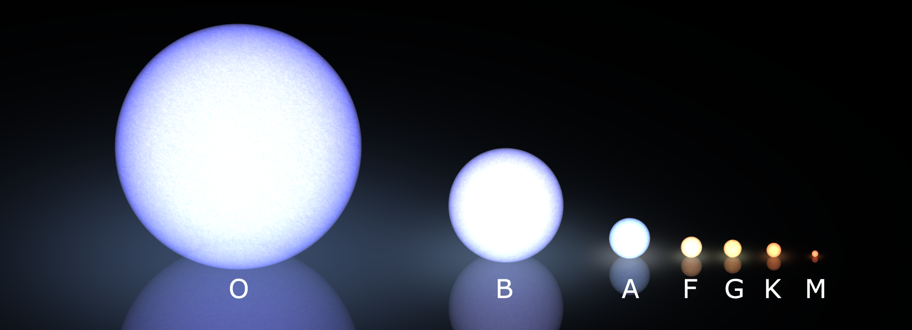

Star spectral types are a classification system that sorts stars by the pattern of absorption lines in their spectra, which in turn reflects the star's surface temperature. The standard sequence of spectral classes, from hottest to coolest, is O, B, A, F, G, K, M. A popular mnemonic for this order is "Oh, Be A Fine Girl/Guy, Kiss Me." Each class is subdivided from 0 (hottest) to 9 (coolest), so a B0 star is hotter than a B9. Combined with a luminosity class from the Morgan-Keenan (MK) system, the full spectral type gives a compact label like G2 V (the Sun) or B8 Ia (Rigel).

LucasVB / CC BY-SA 3.0
{kind=link}
Physical Basis
Different temperatures cause atoms in a star's atmosphere to reach different ionisation states. At high temperatures, hydrogen is almost fully ionised and its absorption lines are weak, while ionised helium lines appear. At cooler temperatures, neutral metals and even molecules dominate the spectrum. In the 1920s, Indian physicist Meghnad Saha derived an equation showing that the fraction of atoms in a given ionisation state depends exponentially on temperature. Cecilia Payne then applied this idea in her 1925 doctoral thesis, demonstrating that the spectral sequence is really a temperature sequence, not a change in chemical composition.
The Main Classes
O stars (≥33,000 K, blue) show ionised helium (He II) lines. Hydrogen lines are weak because most hydrogen is ionised. These are the rarest main-sequence stars, making up roughly 0.00003% of stars in the solar neighbourhood. B stars (10,000–33,000 K, blue-white) show neutral helium lines, strongest around B2, while hydrogen lines grow stronger toward the cooler end. Examples include Rigel and Spica. A stars (7,300–10,000 K, white) have the strongest hydrogen Balmer lines, peaking at A0. Vega, the photometric standard star, is an A0 dwarf. F stars (6,000–7,300 K, yellow-white) show weakening hydrogen lines and strengthening calcium (Ca II) H and K lines, with neutral metals like iron starting to appear.
G stars (5,300–6,000 K, yellow) are defined by very strong Ca II H and K lines and a rich forest of neutral metal lines. The Sun is a G2 V star. About 7.6% of nearby main-sequence stars fall in this class. K stars (3,900–5,300 K, orange) have hydrogen lines nearly absent and neutral metals dominating the spectrum; in late K types, titanium oxide (TiO) bands begin to appear. M stars (2,300–3,900 K, red) are defined by strong TiO and other metal-oxide molecular bands. Despite being faint and hard to see, M dwarfs are by far the most common type of star: roughly 76% of main-sequence stars in the solar neighbourhood are M class.
Extended Classes and Brown Dwarfs
In the late 1990s and 2000s, three additional classes were introduced for objects cooler than M stars: L, T, and Y. Class L (about 1,300–2,500 K) shows metal-hydride bands and alkali metal lines. Class T (about 550–1,300 K) is defined by methane absorption, similar to the spectrum of Jupiter. Class Y (below 550 K) shows ammonia and water features. These objects, mostly brown dwarfs, emit mainly in the infrared.
Luminosity Classes
Stars of the same temperature can differ enormously in size and brightness. A red giant and a red dwarf may share the same spectral class (M), but the giant has much lower surface gravity, which makes its spectral lines narrower. In 1943, William Morgan and Philip Keenan published the MK system, adding Roman-numeral luminosity classes: I (supergiants), II (bright giants), III (giants), IV (subgiants), and V (main-sequence dwarfs). Less commonly used are VI (subdwarfs) and VII (white dwarfs). The full MK classification, such as K0 III for Arcturus, pins down both a star's temperature and its evolutionary state.
History
The story of spectral classification begins with Josef von Fraunhofer, who in 1814 mapped hundreds of dark lines in the solar spectrum. In the 1860s, Angelo Secchi examined over 4,000 stars and grouped them into four broad spectral types based on their dominant features. The modern system grew from the Henry Draper Catalogue at Harvard, where Williamina Fleming, Antonia Maury, and Annie Jump Cannon developed and refined the classification. Cannon simplified the scheme into the temperature-ordered OBAFGKM sequence and personally classified roughly 325,000 stellar spectra, published in nine volumes between 1918 and 1924.